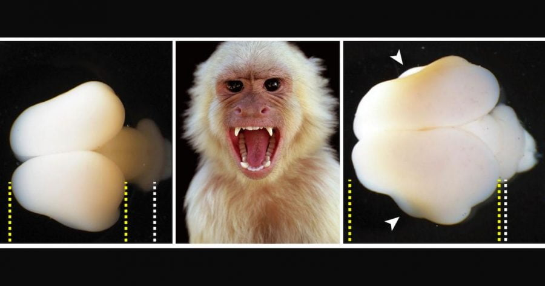

မျောက်ဝံများ၏ဂြိုဟ် (Planet of the Apes) ရုပ်ရှင်ကား ကြည့်ဖူးကြ သလားဗျာ။ မျောက်တွေက အသိဉာဏ် တိုးတက်ပြီး လူသားတွေကို ပြန်ကျွန်ပြုတဲ့ ရုပ်ရှင်လေ။ အခုလဲ သိပ္ပံ ပညာရှင် တွေဟာ လူသားတွေရဲ့ မျိုးရိုးဗီဇ Gene ကို အသုံးပြုပြီး မျောက်တွေရဲ့ ဦးဏှောက်တွေ အရွယ်အစား ကြီးထွားအောင် စမ်းသပ်မှု အောင်မြင်ခဲ့တယ်လို့ သိရပါတယ်။
ဒီ သုတေသန စမ်းသပ်မှုမှာ မျောက် သန္ဓေသားလောင်းထဲကို လူရဲ့ မျိုးရိုးဗီဇ အစိတ်အပိုင်း တစ်ခုကို ဖြတ်တောက်ပြီး ထည့်သွင်း ခဲ့ပါတယ်။ ရည်ရွယ်ချက် ကတော့ ဒီမျောက်ရဲ့ ဦးဏှောက် အရွယ်အစားကို သိသိသာသာ ကြီးလာအောင် ပြုလုပ်ဖို့ ဖြစ်ပါတယ်။
အခု သုတေသနကို ပြုလုပ်ခဲ့တဲ့ သိပ္ပံ ပညာရှင် တွေကတော့ ဂျာမနီ နိုင်ငံ မက်စ်ပလန့် သုတေသန ဌာနကြီးရဲ့ ဆဲလ်ဇီဝဗေဒနှင့် မျိုးရိုးဗီဇ သုတေသန ဓါတ်ခွဲခန်းက (Max Planck Institute of Molecular Cell Biology and Genetics) ပညာရှင် တွေနဲ့ ဂျပန်နိုင်ငံ တိရိစ္ဆာန် သုတေသန ဗဟိုဌာနက (Japan’s Central Institute for Experimental Animals) ပညာရှင်တွေ ပူးပေါင်း စမ်းသပ်ခဲ့တာ ဖြစ်ပါတယ်။
ဒီ စမ်းသပ်မှုမှာ မာမိုဆက် မျောက် (common marmoset monkey) ကလေးရဲ့ သန္ဓေသားလောင်း ထဲကို လူ့ မျိုးရိုးဗီဇ Gene ကနေ ထုတ်ထားတဲ့ ARHGAP11B ဆိုတဲ့ ဗီဇ အစိတ်အပိုင်း လေးကို ထည့်ပေးလိုက်ပါတယ်။ ဒီလို ထည့်ပေးထားတဲ့ မျောက်သားလောင်း လေးရဲ့ ဦးဏှောက် အပြင်လွှာ (Neocortex) ဟာ အခြား မျောက်တွေမှာ ရှိရမယ့် အရွယ်အစားထက် သိသိသာသာ ပိုကြီးနေတာကို တွေ့ကြရပါတယ်။
အခု သုတေသန တွေ့ရှိချက် တွေကို Science သုတေသန ဂျာနယ်မှာ တင်ပြထားတာ ဖြစ်ပါတယ်။
လူသားတွေနဲ့ တိရိစ္ဆာန် တွေရဲ့ ဦးဏှောက်ဟာ အလွှာလွှာ အပိုင်းပိုင်းနဲ့ ဖွဲ့စည်း တည်ဆောက်ထားတာ ဖြစ်ပါတယ်။ အခု စမ်းသပ်ခဲ့တဲ့ Neocortex ဆိုတာဟာ ဦးဏှောက်မှာ နောက်ဆုံး ဖွံ့ဖြိုးလာတဲ့ အစိတ်အပိုင်း ဖြစ်ပါတယ်၊ ဒီ နီယိုကောတက်စ် အပြင်ဆုံး လွှာဟာ လူသားတွေမှာ အထူး ဖွံ့ဖြိုးပြီး စုစုပေါင်း ဦးဏှောက်ရဲ့ ၇၅ ရာခိုင်နှုန်း လောက်ကို နေရာယူ ထားပါတယ်။
ဒီ နီယို ကောတက်စ် ကြောင့်ပဲ လူသားတွေဟာ အဆင့်မြင့်တဲ့ တွေးခေါ်မှုတွေ၊ ဖန်တီးမှုတွေကို ပြုလုပ်နိုင်ကြတာ ဖြစ်ပါတယ်။ နောက်ပြီး ဘာသာစကား နားလည်တာ၊ ပြောနိုင်တာ ဟာလဲ ဒီ နီယိုကောတက်ကြောင့် ဖြစ်ပါတယ်။ တနည်းအားဖြင့် လူနဲ့ တိရစ္ဆာန်နဲ့ကို ပိုင်းခြားထားတာ ဒီ ထူထဲတဲ့ နီယိုကောတက်စ်ကြောင့်ပါ။
လူရယ်လို့ ဖြစ်လာမယ့် ပရိုင်းမိတ်တွေ အချိန်ကတဲက ဒီ နီယိုကောတက်စ်ဟာ တဖြည်းဖြည်း ကြီးထွား လာခဲ့ပါတယ်။ လွန်ခဲ့တဲ့ နှစ် ၃ သန်း အတွင်းမှာ လူသားတွေရဲ့ နီယိုကောတက်စ် ရဲ့ အရွယ်ဟာ ၃ ဆ ကြီးလာပါတယ်။ ဒီလို ကြီးလာတဲ့ နီယို ကောတက်စ်အတွက် ဦးခေါင်းခွံ အတွင်းမှာ လုံလောက်တဲ့ အခန်း မရှိပါဘူး။ ဒီတော့ ပိုလာတဲ့ နီယိုကောတက်စ် တွေဟာ ဦးခေါင်းခွံ အတွင်းမှာ တွန့်ခေါက်ပြီး နေရာယူ ကြရပါတယ်။ ဒါ့ကြောင့် လူ့ဦးဏှောက်ဟာ အတွန့်အတွန့် တွေနဲ့ ထူထပ်နေတာ ဖြစ်ပါတယ်။
သိပ္ပံ ပညာရှင်တွေဟာ လူ့ဦးဏှောက် အရွယ်အစား ကြီးမားမှုနဲ့ သက်ဆိုင်တဲ့ မျိုးရိုးဗီဇကို အတိအကျ ရှာမတွေ့ သေးပါဘူး။ ဒါပေမဲ လူသားတွေ မှာပဲ တွေ့ရတဲ့ ARGHAP11B ဗီဇဟာ ဒီလို ဦးဏှောက်တွေ အရွယ် ကြီးမားမှုနဲ့ သက်ဆိုင်တယ်လို့ သံသယ ဖြစ်ကြပါတယ်။
ယခင် သုတေသန စမ်းသပ်မှုတွေ အရလဲ ကြွက်တွေကို ဒီ ဗီဇ ထည့်ပေးလိုက်တဲ့အခါ သူတို့ရဲ့ ဦးဏှောက်တွေ ကြီးလာတာကို တွေ့ခဲ့ကြရပြီး ဖြစ်ပါတယ်။ ဒါပေမယ့် အခု သုတေသန ကတော့ မျောက်တကောင်ထဲကို ဒီ ဗီဇ ပြောင်းထဲပေးတာ ပထမဆုံး အကြိမ် စမ်းသပ် အောင်မြင်မှုပဲ ဖြစ်ပါတယ်။
ARGHAP11B ဗီဇဟာ လွန်ခဲ့တဲ့ နှစ် ၅ သန်း လောက်ကစလို ရှေးဦး လူသားတွေ ကြားထဲမှာ စတင် ဖြစ်ထွန်း ခဲ့တာ ဖြစ်ပါတယ်။ သူ့ရဲ့ မူရင်း ဗီဇက ARGHAP11A ဖြစ်ပါတယ်။ ဒါပေမယ့် မိဘက သားသမီးကို မျိုးရိုးဗီဇ လက်ဆင့်ကမ်းဖို့ ဗီဇ ကော်ပီ ပွားရာမှာ အမှားအယွင်း ဖြစ်လာပြီး ARGHAP11B ဗီဇ ဆိုပြီး အသစ်ဖြစ်လာခဲ့ပါတယ်
ဒီ အသစ်ဖြစ်လာတဲ့ ဗီဇဟာ လူသားတွေရဲ့ နီယိုကောတက်စ် အပြင်လွှာ ကြီးထွားတဲ့ ကာလကို မူလထက် ပိုကြာအောင် လုပ်ပေးပါတယ်။ ရလဒ်ကတော့ နီယိုကော့တက်စ် ကြီးထွားချိန် ပိုပြီး ကြာသွားတာပဲ ဖြစ်ပါတယ်။ ဒီလို ကြီးထွားချိန် ပိုကြာ သွားတာမို့ ရှေးဦးလူသားတွေရဲ့ ဦးဏှောက်ကလဲတဖြည်းဖြည်း အရွယ် ကြီးလာပါတယ်။
ဒီ ဗီဇ ကိုပဲ မာမိုဆက် မျောက် သန္ဓေသားလောင်း ထဲကို ထည့်ပေး လိုက်တဲ့ အခါမှာ မျောက်လောင်း ကလေးရဲ့ ဦးဏှောက် နီယို ကောတက်စ် အလွှာဟာ သိသိသာသာ ပိုကြီးလာ တာကို တွေ့ကြရပါတယ်။ ဒီလို ကြီးလာယုံတင် မက လူသားတွေရဲ့ ဦးဏှောက်လိုလဲအတွင်းကို ခေါက်ပြီး ဝင်နေတာကို တွေ့ကြရပါတယ်။
ဒါ့အပြင် လူ့အကြို ပရိုင်းမိတ် တွေရဲ့ ဦးဏှောက်မှာ အများအပြား ပွားလာတဲ့ ဦးဏှောက် အာရုံကြော ဆဲလ်တွေလဲ ဒီမျောက်လေးရဲ့ ဦးဏှောက်ထဲမှာ ပွားလာတာကိုပါ တွေ့ကြရပါတယ်။
သိပ္ပံ ပညာရှင် တွေက ဒီ မျောက်လေးတွေကို “Transgenic non-human primates” (လူမဟုတ်သော ဗီဇလွှဲပြောင်း ထားသည့် ပရိုင်းမိတ် လူအကြိုများ) ဆိုပြီး အမည် ပေးထားပါတယ်။
အခု သုတေသနဟာ အောင်မြင်တယ် ဆိုပေမယ့် ကိုယ်ကျင့်တရား (ethical) ဆိုင်ရာ မေးခွန်းတွေလဲ ပေါ်ပေါက်လာပါတယ်။ လူသားတွေရဲ့ မျိုးရိုးဗီဇကို တိရိစ္ဆာန် တွေမှာ လွှဲပြောင်း စမ်းသပ်မှုတွေဟာ ကိုယ်ကျင့်သိက္ခာနဲ့ ပါတ်သက်လို့ သင့်လျှော်မှု ရှိမရှိ ဆိုတဲ့ မေးခွန်း အပြင် လူအကြို ပရိုင်းမိတ် တွေကို ဓါတ်ခွဲခန်းမှာ ထင်သလို စမ်းသပ်မှု ပြုတာမျိုးကရော သင့်တော်ရဲ့လား ဆိုတဲ့ မေးခွန်း ဖြစ်ပါတယ်။
ဒါ့ကြောင့်မို့လဲ အခု သုတေသနမှာ သုတေသီ တွေဟာ စမ်းသပ်တဲ့ မျောက်သန္ဓေသား ရက် ၁၀၀ မျောက်မှာ မိခင်ဆီကနေ ခွဲစိတ် ထုတ်ယူပြီး ဦးဏှောက်ကို ဓါတ်ခွဲစမ်းသပ် ခဲ့ကြတာ ဖြစ်ပါတယ်။ မျောက်ကို မွေးဖွားတဲ့ အထိ စောင့်နေ ခဲ့မယ် ဆိုရင် လူသား မျိုးရိုးဗီဇ သယ်ဆောင်ထားပြီး သာမန် မျောက်ထက် အများကြီး ဖွံ့ဖြိုးတဲ့ ဦးဏှောက်နဲ့ ဉာဏ်ရည်မျိုး ပိုင်ဆိုင်တဲ့ ပရိုင်းမိတ် တစ်ကောင် (တစ်ယောက်?) အပေါ် စမ်းသပ်မှုနဲ့ ပါတ်သက်လို့ မေးခွန်းထုတ်စရာ အများကြီး ဖြစ်လာနိုင်လို့ပါ။
အခု မျောက်ကလေးတွေ အကယ်လို့သာ မွေးဖွားခဲ့မယ်ဆို ဘယ်လောက်ထိ ဉာဏ်ရည် ရှိမလဲ၊ သူတို့ကနေ မွေးဖွားလာတဲ့ မျိုးဆက် တွေကနေ လူသားလိုပဲ ဉာဏ်ရည် မြင့်တဲ့ မျောက်မျိုးနွယ်တွေ ပေါ်ထွန်း လာနိုင်မလား ဆိုတာကတော့ လက်ရှိမှာ ဘယ်သူမှ ဖြေကြားပေး နိုင်ခြင်း မရှိသေးပါဘူး။
Reference: Uh-Oh, Scientists Used Human Genes to Make Monkey Brains Bigger | Popular Mechanics
လူ့မျိုးရိုးဗီဇ ကိုသုံးပြီး မျောက်ဦးဏှောက် ကြီးထွားအောင် စမ်းသပ်အောင်မြင်

December 20, 2021
Other Posts
- ဂလက်ဆီ တွေကို ဝါးမျိုစားသုံးနေတဲ့ ကွေဆာကြီး
- ကမ္ဘာ့ ပထမဆုံး လေယဉ်တင် လေဆာ လက်နက်
- ကမ္ဘာ့သမိုင်း၏ အဆိုးရွားဆုံး မျိုးတုန်းမှုကြီး
- အိန္ဒိယ ရေတပ်မတော်၏ လေယာဉ်တင် သင်္ဘောကြီး ပင်လယ်ပြင် စမ်းသပ်မှု အောင်မြင်စွာ ပြီးဆုံး
- အာကာသ လေပြင်းက ကြယ်သစ်မွေးဖွားမှုကို ရပ်တန့်စေနိုင်
- ကွမ်တမ်မိတ်ဆက် – ကွာဇီအမှုန်ဆိုတာ ဘာလဲ
- Antimatter (ဆန့်ကျင်ဒြပ်) ဆိုတာဘာလဲ
- စတော်ဘယ်ရီသီးရဲ့ အစေ့က ဘယ်မှာလဲ
- မံမီ ကျိန်စာကို သိပ္ပံပညာရှင်တွေက ဘယ်လိုအကြောင်းပြသလဲ
- စကြာဝဠာ အစဦးမှ ဟီလီယံ ဓါတ်ငွေ့များ ကမ္ဘာ့အတွင်းပိုင်းမှ စိမ့်ထွက်လာနေ